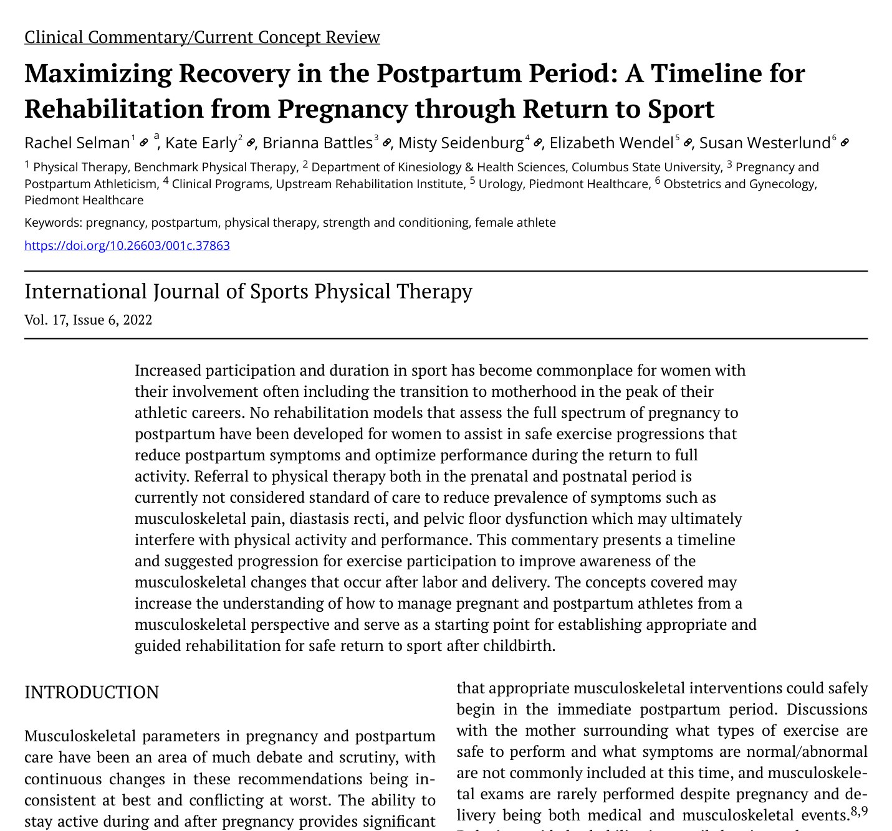
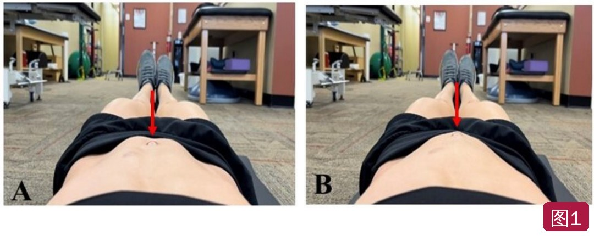
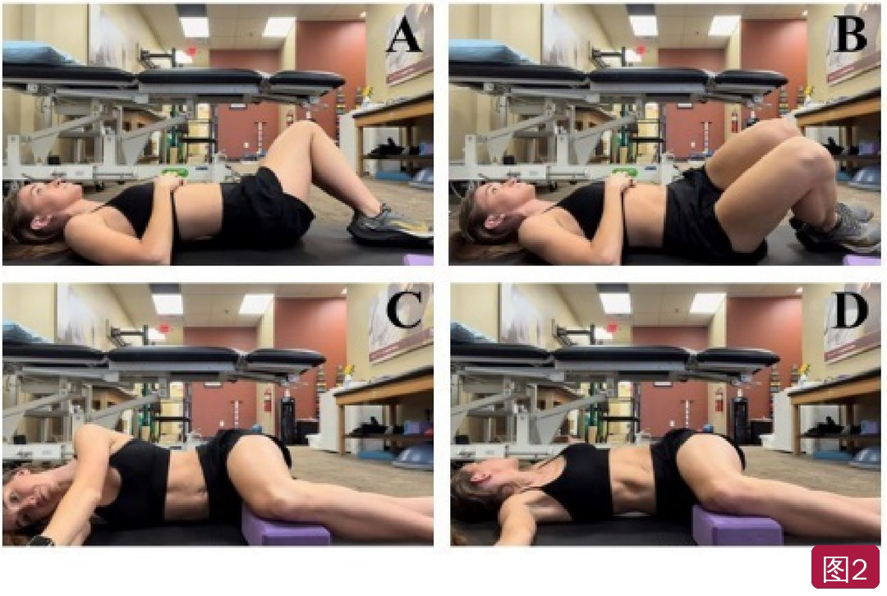
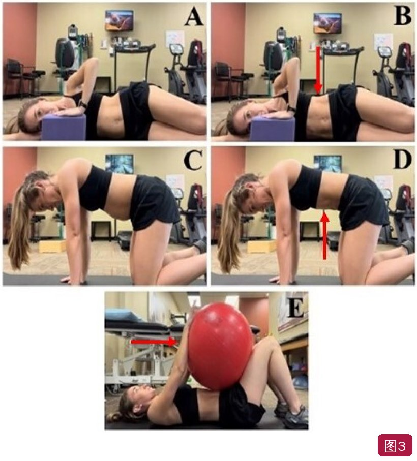

🔖原文首页（IJSPT 2022 年第 17 卷第 6 期）
📚 文献卡片
▪ 英文原题：Maximizing Recovery in the Postpartum Period: A Timeline for Rehabilitation from Pregnancy through Return to Sport（产后最大化恢复：从孕期到重返运动的康复时间线）
▪ 作者：Rachel Selman, PT, DPT · Kate Early · Brianna Battles · Misty Seidenburg · Elizabeth Wendel · Susan Westerlund
▪ 机构：Benchmark 物理治疗；哥伦布州立大学运动机能学系；Upstream 康复研究所；Piedmont 医疗泌尿科与妇产科等（美国）
▪ 期刊：International Journal of Sports Physical Therapy（IJSPT）
▪ 年卷期：2022;17(6):1170-1183
▪ DOI：10.26603/001c.37863
▪ 文章类型：临床评论 / 当前概念综述
▪ 关键词：pregnancy · postpartum · physical therapy · strength and conditioning · female athlete
运动表现高峰与生育高峰重叠，越来越多女性运动员在职业巅峰期经历怀孕和生产。孕期运动能降低妊娠糖尿病、子痫前期、高血压、抑郁和产前产后尿失禁的风险，且不增加低出生体重、流产或围产期死亡。
然而，孕期如何安全进阶、产后如何回到运动几乎没有指导。产后 6 周复查通常被当作“可以恢复正常活动”的时间点，但很少做肌骨评估，也很少讨论哪些运动安全、哪些症状正常。目前没有经同行评议的产后重返运动方案，而 75% 的产后跑者在 8 周内就恢复跑步；超过 1/3 的产后跑者回归后出现疼痛和某种形式的尿失禁。
本文提出一个从孕早期到产后 13 周以上的分阶段康复时间线，帮助孕产期运动员安全重返运动。
表1 孕期和产后各阶段目标与示例标准（精简）
| 阶段 | 重点 | 示例标准 |
|---|---|---|
| 孕早期 | 认识身体变化；腹横肌 + 膈式呼吸；学会主观用力评分（RPE） | 医生同意运动；不憋气地收缩/放松腹横肌 |
| 孕中期 | 安全运动与活动度；姿势力量与耐力 | 站姿、坐姿正确且能独立维持 |
| 孕晚期 | 练习放松盆底以利分娩，同时保持控尿；分娩体位教育 | 不憋气地收缩/放松盆底；了解有无硬膜外麻醉时的分娩体位 |
| 产后 0～2 周 | 促进愈合，减少疼痛；抱婴儿的身体力学 | 骨盆前后倾；膈式呼吸；站立开链动作模拟行走 |
| 产后 3～4 周 | 协调盆底、腹横肌和呼吸；步行 <15 分钟 | 腹横肌收缩 20 次 × 5 秒；双腿臀桥 30 次 × 5 秒；无症状步行 10 分钟；盆底短收缩 <5 秒 |
| 产后 5～6 周 | 步行 <30 分钟；日常功能动作 | 15～30 次、<10 磅（可抱宝宝）；盆底长收缩 10 秒；蚌式、站立抬腿等髋部练习 |
| 产后 7～12 周 | 力量、耐力、爆发力；8～10 周可能开始冲击 | 8～12 次力量训练；深蹲、单腿坐站、登山跑（扶桌）；无症状步行 30 分钟 |
| 产后 13 周以后 | 全面回归跑步和运动 | 按目标步频节拍器练习；6 项任务各 60 秒无症状 |
一句话概括：别等到产后 6 周才开始，也别 6 周一到就直接跑：先恢复呼吸、腹横肌和盆底，再按症状逐级加载，一般 8 周以后、能无症状走 30 分钟并通过跑步准备测试，才开始跑。
• 体重增加、韧带松弛、姿势和重心改变，对力量、耐力和姿势控制提出不同要求；孕 38 周时腹肌被拉长到静息长度的 115%
• 孕中期心输出量增加 30%～50%，基础耗氧增加 10%～20%，可用于有氧运动的氧减少
• 过去常说孕期心率 <140 次/分、不举超过 25 磅——最新证据认为，对低风险妊娠这些限制已不合适
• 分娩时盆底肌被拉长到静息长度的 250%；盆底（肛提肌及结缔组织）恢复约在产后 4～6 个月达到最大，但通常远早于此就被“放行”
• 产后膀胱颈活动度仍高于孕 37 周，需要更多肌肉支撑；剖宫产 6 周时子宫瘢痕仍在重塑
• 很多症状常见但不正常。美国并未把盆底康复列为常规，女性常需自己争取
• 超过 1/4 的女性至少有一种盆底功能障碍（压力性/急迫性尿失禁、膀胱过度活动、盆腔器官脱垂、大便失禁）；产后 3 个月仍尿失禁者，5 年时持续失禁的可能性明显更高
• 盆腔器官脱垂手术量预计未来 40 年增加约 48%；产后尿失禁会成为运动障碍
• 产后盆底通常在力量、运动控制和耐力上都有功能障碍；孕前不会正确使用盆底或多胎未充分康复者，自行训练困难更大
• 孕期正确进行深层核心训练，孕晚期和产后的尿失禁症状明显更少
• 高冲击活动伴随腹内压骤升和 1.6～2.5 倍体重的地面反作用力；盆底需在跑步中反复快速收缩和放松
• 如果在治疗室中都不能按需收缩放松，在下意识的跑步中更做不到，可能导致尿失禁和脱垂
• 高冲击运动的盆底功能障碍风险约为低冲击运动的 5 倍；Goom 等建议约产后 3 个月考虑恢复跑步
• 就像术后要等解剖愈合才跑步一样，产后也应采用时间 + 标准结合的方案
• 有氧：保持能说话的强度（RPE 1～4/10），不再限制 140 次/分；偶尔可短时 RPE 5～7（<10 分钟）。每周 150 分钟中等强度，至少 3 天、最好每天
• 可做跑步、固定自行车、低冲击有氧、踏板操、游泳、步行；避免接触性运动、易跌倒的运动（骑马、骑行、高山滑雪）、潜水和高温瑜伽
• 跑步可继续，但可减少时长、多用间歇跑和坡道跑减少重复冲击；孕晚期更多用交叉训练（骑车、游泳）
• 力量：每周至少 2 天全身抗阻训练；孕中晚期更多做抗旋转、抗伸展等稳定性练习，减少反复腰椎屈曲
• 腹直肌分离：出现“鼓包”（coning）说明白线张力管理不足，应调整动作；调整后仍反复鼓包则暂停该动作（图 1）
• 杠铃经过腹部的爆发性动作（如抓举）应拆成硬拉、推举等或改用哑铃；仰卧时出现面色苍白、心率血压升高或不适，改为至少 30° 斜靠位
• 孕晚期：重点练习盆底放松和呼吸（深吸气和呼气时都能放松），为分娩做准备；深蹲、婴儿式、内收肌牵伸有助于盆底放松；约 34 周可开始会阴按摩；讨论分娩体位（四点跪、深蹲、侧卧，硬膜外麻醉者可用花生球侧卧或骶尾部垫毛巾）
• 盆底内部检查：孕早期流产风险最高，一般推迟；孕中晚期在医疗团队同意和知情同意下可做；外部检查也能评估盆底功能且感染风险更低

🔖图1：孕早期抬腿时白线张力管理——A 正常；B 异常，腹部中线出现“鼓包”（红色箭头）
• 产后即刻以减少肌骨负荷、促进愈合为主，强度 RPE 0～2，小段室内行走；舒适后开始短时步行（<10～15 分钟），增加频次
• 每次步行后观察 24～48 小时的症状——脱垂等盆底症状可能延迟出现；无症状时可逐渐增加速度（不到慢跑）和时长（<20～30 分钟）或上坡走
• 先恢复膈式呼吸，重建胸腰活动度和盆底的随意控制；骨盆倾斜开始轻柔的腹横肌训练；无痛范围内做腰椎旋转和侧卧“开书”（图 2）
• 有症状则推迟盆底收缩/放松，等内部检查后再做；逐步在仰卧、侧卧、四点跪位做腹横肌稳定训练，配合呼吸（图 3）
• 哺乳和抱婴儿让很多新妈妈姿势耐力差，要练姿势力量；无症状时在坐、站、高平板位协调腹横肌；加入开链髋部力量训练，并在坐站、上台阶等功能动作中配合盆底收缩/放松

🔖图2：腰椎活动度练习——A、B 向左、向右旋转后回到中立；C、D 侧卧“开书”，屈膝 90° 并垫支撑

🔖图3：腹横肌训练——A、B 侧卧，手推瑜伽砖、下肋内收做等长收缩，再放松并呼气；C、D 四点跪收肚脐与放松；E 屈膝仰卧呼气时双手推球
• 步行继续加速、加时；根据产程、撕裂程度、睡眠、激素和哺乳等因素，约 8 周可加入短时慢跑（正文写 <20 秒，表 2 写 <60 秒）
• 慢跑间歇跑 : 走 = 1 : 2，总时长不超过 20 分钟，之后观察 48 小时无症状再逐步延长
• 开始跑步的条件：产后不早于 8 周；能无症状步行至少 30 分钟；能无症状完成跑步准备量表中的各项任务（上台阶、靠墙静蹲、单腿蹲、双腿蹲、平板支撑，各 1 分钟）
• 每周的每个阶段完成两次、间隔 48 小时；第二次后 48 小时无症状再进阶；推婴儿车跑时建议双手推车（速度和步幅最接近平时）
• 内部检查（经妇产科同意）判断盆底需要“上调训练”还是“下调训练”；目标是全范围活动、快速收缩（力量）和耐力保持
• 闭链力量（深蹲、弓步、提踵、上台阶）从双腿到单腿，后期加快速度；水平冲击（登山跑、平板开合跳）为直立冲击做准备
• 跑步步频 160～180 步/分，步频提高 10% 可降低膝关节应力；可做二维跑姿分析，关注髋膝内收和膝关节刚度
表3 重返跑步示例方案（以时间而非距离计）
| 周 | 跑（慢跑/跑） | 走（休息） | 最长总时长 |
|---|---|---|---|
| 1 | 1 分钟 | 2 分钟 | 20 分钟 |
| 2 | 1 分钟 | 1 分钟 | 20 分钟 |
| 3 | 1 分钟 | 2 分钟 | 30 分钟 |
| 4 | 1 分钟 | 1 分钟 | 30 分钟 |
| 5 | 2 分钟 | 2 分钟 | 20 分钟 |
| 6 | 2 分钟 | 1 分钟 | 20 分钟 |
| 7 | 2 分钟 | 2 分钟 | 30 分钟 |
| 8 | 2 分钟 | 1 分钟 | 30 分钟 |
| 9 | 3～5 分钟 | 2 分钟 | 30 分钟 |
| 10 | 3～5 分钟 | 2 分钟 | 45 分钟 |
| 11 | 5～10 分钟 | 2 分钟 | 30 分钟 |
| 12* | 10～15 分钟 | 2 分钟 | 45 分钟 |
* 第 12 周以后按运动员目标调整强度和时长；想提高短时速度者，可更多停留在前几周的模式并提高跑段强度。这只是示例，各参数可按个人情况调整。
• 逐步增加里程和速度，跑中按需穿插走和休息；同时增加力量训练和其他有氧训练
• 冲击训练由水平逐步过渡到直立；初期可在轻微上坡上跑，减少很多新妈妈产后的骨盆前倾、帮助盆底发力，再逐步降到 0%
• 每周评估能否完全放行，训练量每周增加 2%～10%（ACSM）
• 不是所有人都该多做凯格尔：很多女性被告知孕期反复收缩盆底，却没学放松；盆底过度活跃者反复收缩反而加重症状。任何盆底症状都提示还不能进阶
• 跑前排空乳房可减少不适和乳腺堵塞；只要水分和热量充足，运动不会减少泌乳
• 专业试穿运动内衣，孕前的可能已不合适；孕期韧带松弛可能改变足的大小和形状，需重新评估跑鞋并练足内在肌（松弛素增加损伤风险的说法尚无研究支持）
表2 孕期至重返运动的肌骨方案
| 孕早期 | |
| 有氧 | • 能说话的轻中强度（RPE 1～4），偶尔 RPE 5～7（<10 分钟） • 按每日症状调整 • 每周 150 分钟中等强度，至少 3 天，最好每天 • 有氧、力量和活动度多种运动 • 运动前后 5～10 分钟热身和整理 |
| 神经肌肉 | • 腹直肌分离教育 • 去除或调整引起鼓包的动作 • 膈式呼吸协调：呼气时收缩盆底，吸气时放松 |
| 力量 | 每周至少 2 天全身抗阻训练，由患者和治疗者在限制范围内选择动作 |
| 盆底 | 一般推迟内部检查 |
| 本期调整 | 根据疲劳、恶心、不适等症状调整 |
| 孕中期 | |
| 有氧 | • 同上（RPE 1～4，偶尔 5～7） • 可继续跑，但随胎儿长大多用间歇跑 • 鼓励交叉训练（骑车、游泳） |
| 神经肌肉 | 同孕早期，继续注意腹横肌和白线的合理加载 |
| 盆底 | • 经医疗团队同意并按本人意愿，可做内部检查了解基线功能 • 也可做外部检查，降低感染风险 |
| 力量 | 每周至少 2 天全身抗阻训练 |
| 本期调整 | • 更多抗核心动作以加强稳定 • 去除或调整杠铃经过腹部的爆发性动作 • 有症状时限制或调整仰卧动作 |
| 孕晚期 | |
| 有氧 | • 轻中强度（RPE 1～4） • 可继续跑，但多用间歇和更频繁的休息 • 更多交叉训练代替跑步 |
| 神经肌肉 | • 加强“下调训练”技巧以利分娩 • 重心前移，加强姿势耐力 |
| 力量 | 每周至少 2 天全身抗阻训练 |
| 盆底 | • 约 34 周可讨论会阴按摩 • 讨论有利于骨盆活动和打开骨盆出口的分娩体位 • 重点练习盆底放松和呼吸技巧 |
| 本期调整 | • 保持之前的所有调整 • 无症状时可短时冲击（跳/跑），增加休息 |
| 产后 0～2 周 | |
| 有氧 | • 减少肌骨负荷以利愈合 • 小段室内行走 • 营养教育，满足哺乳和运动需要 |
| 神经肌肉 | • 耐受范围内的膈式呼吸和骨盆活动 • 轻柔无痛的活动度和姿势练习 • 抱、举、托婴儿的身体力学 |
| 盆底 | 轻柔的腹横肌/盆底收缩放松，有症状则推迟 |
| 产后 3～4 周 | |
| 有氧 | 短时步行（<10～15 分钟），频次可逐步增加 |
| 神经肌肉 | 仰卧、侧卧、四点跪位加强腹横肌协调 |
| 盆底 | • 盆底收缩/放松，短保持（5 秒） • 有症状继续推迟 |
| 产后 5～6 周 | |
| 有氧 | • 步行时长逐步增加（<20～30 分钟） • 可逐步加速，但不到慢跑 |
| 神经肌肉 | • 包括胸椎和颈椎的姿势力量和耐力 • 坐、站等功能动作中协调腹横肌 |
| 盆底/力量 | • 开链髋部力量训练配合盆底收缩放松 • 盆底长保持（10 秒） • 轻功能动作（坐站、上台阶） |
| 产后 7～12 周 | |
| 有氧 | • 步行时长和速度逐步增加 • 8 周以后可视冲击准备情况加入 <60 秒的慢跑 • 恢复时间为跑的 2 倍（如跑 60 秒、走 120 秒） • 跑段保持能说话的强度，RPE <6 |
| 神经肌肉 | • 认识并改善产后持续的姿势改变 • 胸椎旋转/伸展，纠正骨盆过度前倾或后倾 • 水平冲击（如扶桌登山跑）逐步进阶，先练缓冲，再到直立位 |
| 盆底 | • 按本人意愿做内部检查了解基线功能 • 既看收缩放松是否正确，也看力量和耐力，决定上调还是下调训练 |
| 力量 | • 闭链力量从慢速开始，逐步加快 • 从双腿到单腿负重 |
| 冲击准备 | 双腿跳下、提踵弹跳、快速前/侧/后弓步，矢状面、水平面和冠状面的壶铃摆动变式 |
| 进阶指标 | • 负荷和冲击时有无肌骨疼痛或盆腔症状 • 跑步准备量表 |
| 产后 13 周以后 | |
| 有氧 | • 逐步增加里程和速度，跑中按需走和休息 • 可做二维跑姿分析，降低受伤可能 |
| 力量/爆发力 | • 从盆底角度，冲击在上坡上可能更易耐受 • 逐步降低坡度至平地 • 按 ACSM（每周增加 2%～10%）随训练量增加每周评估能否完全放行 |
• 证据级别低：临床评论（原文未标注证据级别，相当于 5 级），时间线和标准主要来自作者经验和对指南的整合，没有验证研究
• 亮点：填补了孕期到产后重返运动的空白，强调“常见不等于正常”、盆底既要会收也要会放，给出了跑步准备标准和 12 周跑步示例方案
• 前后数字不一致：初始慢跑时长正文写 <20 秒，表 2 写 <60 秒；跑步准备量表正文写“六项任务”但只列出五项，且与表 1 的 13 周以上 60 秒任务（单腿提踵、单腿跳下台阶、单腿跳、原地跳、靠墙静蹲、平板）不同
• “抗旋转”重复：孕期稳定练习写成“抗旋转、抗伸展和抗旋转”，可能原意为抗侧屈
• 适用性：方案主要针对跑步；剖宫产、严重撕裂、产后抑郁等情况仅简单提及，需要个体化；作者建议每个阶段最好由盆底物理治疗师监督，在很多地区可及性有限
• 小瑕疵：RPE 引用了与主题不符的文献编号；“complimentary”应为 complementary；“agreeance”应为 agreement
① 孕期：能说话的强度（RPE 1～4），每周 150 分钟 + 每周 2 天力量；注意腹部“鼓包”；孕晚期练盆底放松
② 产后 0～2 周：休息愈合，膈式呼吸、骨盆倾斜、短时室内行走
③ 产后 3～6 周：腹横肌 + 盆底协调，步行从 <15 分钟加到 <30 分钟，髋部力量和功能动作
④ 产后 7～12 周：闭链力量从双腿到单腿，水平冲击；不早于 8 周、无症状走 30 分钟、通过准备测试后才跑
⑤ 跑步方案：跑 1 走 2 起步，每阶段做两次、间隔 48 小时无症状再进阶，步频 160～180
★ 核心理念：症状是信号——漏尿、下坠感、疼痛都说明还没准备好；盆底要会收也要会放，不是一味多做凯格尔
欢迎关注骨科康复小黄公众号，获取更多物理治疗的专业知识！
📄参考文献：
Selman R, Early K, Battles B, Seidenburg M, Wendel E, Westerlund S. Maximizing Recovery in the Postpartum Period: A Timeline for Rehabilitation from Pregnancy through Return to Sport. Int J Sports Phys Ther. 2022;17(6):1170-1183. doi:10.26603/001c.37863.
文中 3 张图片均来自原文（图 1 改为左右排列，图 2、3 去除留白）；表 1～3 已译为中文，仅用于学术交流。